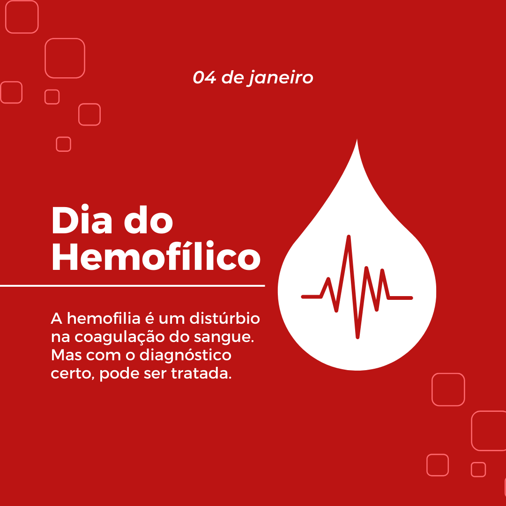

A coagulação do sangue envolve a interação de proteínas conhecidas como fatores da coagulação, além da participação essencial de íons e células, como as plaquetas. Aliás, é crucial citar a participação da proteína fibrina, pois é ela que desempenha um papel crucial na estabilização do coágulo.
São as deficiências nos fatores da coagulação que podem levar a doenças hemorrágicas, denominadas de coagulopatias e uma delas é a Hemofilia. A hemofilia é um distúrbio de caráter que está estritamente ligado ao do sangue, pois prejudica a coagulação sanguínea, resultando principalmente sangramentos, que por sua vez, podem ser prolongados ou anormais.
Gravidade da Hemofilia
A gravidade da hemofilia varia de pessoa para pessoa, dependendo da quantidade do fator de coagulação ausente ou deficiente e de outros fatores individuais. Algumas pessoas podem experimentar apenas sangramentos leves, enquanto outras enfrentam sangramentos graves e frequentes que podem representar riscos para a saúde e a qualidade de vida.
Coagulação sanguínea
A coagulação acontece por meio de lesões nos vasos sanguíneos que rompem o endotélio e promove o extravasamento a matriz existente no sangue que, em contato com substâncias associadas na matriz subendotelial, ligam-se às plaquetas, que possuem uma forma similar a um disco, formando um aglomerado de plaquetas. Essas plaquetas se fixam ao tecido. Além disso, a coagulação sanguínea que envolve a formação do trombo e a líse das estruturas das proteínas fibrina, após o processo de cicatrização, elas são essenciais para interromper o sangramento. Basicamente a hemostasia ocorre em 3 etapas, a primeira, é Hemostasia Primária que envolve a contração vascular no local para que assim acontteça a diminuição do fluxo sanguíneo na região. Em seguida acontece a criação de um tampão plaquetário, tendo atuação na região das plaquetas e do fibrinogênio e a fibrinólise, que é a ação que promove a remoção dos coágulos, quando o vaso retorna ao seu habitual.
Fisiopatologia
Existem dois tipos de Hemofilia, o tipo A e o tipo B, o tipo A é caracterizada por ser de caráter hereditário por alelo recessivo e associado ao cromossomos sexual X, manifestando-se principalmente nos homens, acometida pelo falta de atividade no fator de coagulação VIII, em geral, ela é uma doença congênita, mas pode ser adquirida ao longo da vida. Já a hemofilia do tipo B está associada a uma anomalia no fator IX (nove). Esse patologia permite a produção de anticorpos contra os fatores de coagulação, especialmente contra o fator VIII, são os chamados inibidores de coagulação.
Figura: Representação esquemática acerca da hereditariedade da hemofilia. Retirada de: repositorio.uniceub.br
A gravidade da hemorragia na hemofilia é principalmente determinada por fatores genéticos que influenciam a atividade de coagulação dos fatores VIII ou IX no sangue:
Hemofilia leve: A atividade de coagulação varia entre 5% e 49% do normal. Os portadores de hemofilia leve podem não ser diagnosticados, mas atenção: eles podem apresentar sangramentos excessivos após cirurgias, procedimentos dentários ou lesões.
Hemofilia moderada: A coagulação está entre 1% e 5% do normal. Esses indivíduos com hemofilia moderada muito raramente passam por hemorragias espontâneas, entretanto, podem sofrer sangramentos graves após cirurgias ou lesões. Além disso, o seu primeiro episódio hemorrágico pode acontecer antes dos 18 meses de idade.
Hemofilia grave: A atividade de coagulação é bem prejudicada, com cerca de 1% do normal. Essas pessoas sofrem de hemorragias que geralmente são graves e recorrentes, podendo ser até mesmo espontâneas, sem lesões aparentes. O primeiro episódio hemorrágico pode ocorrer durante ou logo após o parto. Ademais, essas hemorragias podem ocorrer de formas repetidas nas articulações e músculos, causando deformidades musculares. Esses sangramentos também são capazes de obstruir as vias respiratórias, dificultar a respiração e, em casos de traumas na cabeça, causar danos cerebrais fatais.
Sintomas da Hemofilia
Equimoses
Sintoma comum: Marcas roxas e lesões pelo corpo que aparecem sem motivo e que podem ter sido causadas por um sangramento debaixo da pele.
Sangramentos em Músculos e Articulações
Sintoma comum: Dor forte e restrição de movimento em lugares como os joelhos e tornozelos, por conta de sangramentos internos, podendo até ter deficiências no sistema ósseo e dificuldade em se movimentar.
Sangramentos Espontâneos
Sintoma comum: Sangramentos que surgem sem nenhum trauma ou razão aparente; cortes que levam muito tempo para parar de sangrar. Em geral, ocorrem hemorragias nas cavidades da pele.
Sangramentos nas Mucosas
Sintoma comum: Sangramentos frequentes nas mucosas, como o nariz e a gengiva.
Dor e Restrição de Movimento
Sintoma comum: Dor forte e restrição de movimento em lugares como os joelhos e tornozelos, por conta de sangramentos internos.
Como é feito o
Diagnóstico
A hemofilia é um distúrbio hemorrágico hereditário caracterizado pela deficiência de fatores
de coagulação, essencial para o controle do sangramento. Os dois tipos principais são a
hemofilia A, causada pela deficiência do fator VIII, e a hemofilia B, causada pela deficiência
do fator IX. O diagnóstico precoce e preciso é crucial para a gestão adequada e a
prevenção de complicações hemorrágicas. O processo de diagnóstico começa com uma
análise detalhada da história clínica e um exame físico do paciente, neles inclui se a história
familiar onde a hemofilia é uma doença hereditária ligada ao cromossomo X, a história do
sangramento, onde os episódios de sangramento prolongado após cortes, cirurgias ou
traumas menores e os sintomas clínicos que são os sangramentos nas articulações
(hemartroses), hematomas frequentes e sangramentos espontâneos são sinais típicos.
Os diagnóstico genéticos são as análises de mutações onde a identificação de mutações
específicas nos genes F8 (para hemofilia A) e F9 (para hemofilia B) e o sequenciamento de
DNA em que as técnicas avançadas, como o sequenciamento de próxima geração (NGS),
permitem a identificação precisa de mutações responsáveis pela hemofilia. Possui também
o diagnóstico diferenciado onde outros distúrbios de coagulação, como a doença de von
Willebrand e outras deficiências de fatores de coagulação, podem apresentar sintomas
semelhantes. Portanto, é essencial diferenciá-los da hemofilia através de testes específicos.
E por fim, o diagnóstico da hemofilia envolve uma combinação de história clínica
detalhada, testes laboratoriais específicos e análise genética. O diagnóstico precoce é vital
para a gestão eficaz da doença, prevenção de complicações e melhoria da qualidade de
vida dos pacientes. O avanço contínuo nas tecnologias de diagnóstico promete melhorar
ainda mais a precisão e a eficiência na identificação da hemofilia.
A hemofilia é uma condição genética que afeta a capacidade do corpo de coagular o sangue
adequadamente, geralmente envolve dois tratamentos principais: terapia de reposição de fator de
coagulação e tratamento de suporte.
Terapia de Reposição de Fator de Coagulação: Este é o principal tratamento para hemofilia.
Envolve a administração do fator de coagulação deficiente diretamente na corrente sanguínea.
Existem dois tipos principais de hemofilia - A e B - que são tratados com diferentes fatores de
coagulação: fator VIII (oito) para hemofilia A e fator IX (nove) para hemofilia B. Essa terapia
pode ser administrada de forma profilática, preventiva, ou sob demanda, dependendo da
gravidade da condição e das necessidades individuais do paciente.
Tratamento de Suporte:
Além dessas abordagens principais, é importante que os pacientes com hemofilia recebam
cuidados abrangentes e coordenação multidisciplinar, envolvendo hematologistas,
fisioterapeutas, enfermeiros especializados e outros profissionais de saúde. O objetivo do
tratamento é prevenir sangramentos e complicações associadas, melhorar a qualidade de vida e
permitir que os pacientes levem uma vida ativa e saudável.
Não há cura, mas tem Tratamento!
A hemofilia é uma condição genética que não tem cura, necessitando de tratamento contínuo para controle dos sintomas. Os pacientes dependem de terapias para substituir os fatores de coagulação deficientes e prevenir sangramentos.
Profilaxia Primária
Realizar o tratamento contra os sangramentos precocemente é essencial para minimizar as sequelas. Atualmente, uma das abordagens é a profilaxia primária, que consiste na infusão do fator anti-hemofílico duas a três vezes semanais, iniciando-se após o primeiro episódio hemorrágico, isso é feito para prevenir futuras hemorragias e proteger as articulações contra lesões. Em casos de sequelas articulares estabelecidas, pode-se recorrer a medidas profiláticas secundária ou terciária, a fim de melhorar a condição do portador e prevenir próximos sangramentos.
Remédios
Um dos tratamentos da hemofilia consiste na reposição justamente dos fatores anti-hemofílicos, os pacientes com hemofilia A recebem fator VIII, enquanto aqueles com hemofilia B recebem fator IX. Essas medicações são distribuídas pelo Ministério da Saúde de forma gratuita nos hemocentros.

Será que realmente você entendeu? Hemofilia
Questionário
Teste seus conhecimentos sobre hemofilia! Participe do nosso quiz e aprenda mais sobre essa condição genética rara que afeta a coagulação do sangue.
Pio, Simone Ferreira; Oliveira, Guilherme Corrêa de; Rezende, Suely Meireles. As bases moleculares da hemofilia A. Revista da Associação Médica Brasileira, 55(2), p. 213-219, 2009.